📊 Основні відмінності
Кожен тип антивірусного програмного забезпечення має унікальні характеристики, що відрізняють його від інших. Наша система порівняння розглядає:
🎯 Призначення та функціональність
Де саме знаходиться антивірус в системі - файли, пам'ять, мережа, пошта
⚡ Спосіб роботи
Як антивірус виявляє та блокує загрози - сигнатури, поведінка, евристика
🔧 Налаштування та конфігурація
Які параметри можна налаштовувати для оптимальної роботи
🎯 Цільові об'єкти
Що саме захищає антивірус - файли, систему, мережу, дані
⭐ Унікальні особливості
Чим відрізняється від інших типів антивірусного захисту
🛠️ Приклади програм
Конкретні назви програмного забезпечення кожного типу
📋 Схеми типів антивірусного програмного забезпечення
Детальні схеми кожного типу антивірусного ПЗ з описом принципів роботи, переваг та недоліків:
1
Файловий монітор (вартовий)
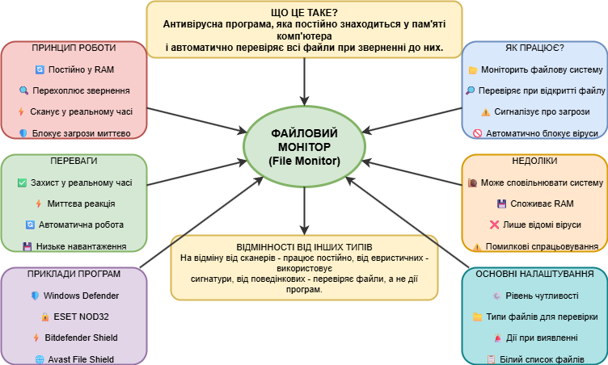
Антивірусна програма, яка постійно знаходиться у пам'яті комп'ютера і автоматично перевіряє всі файли при зверненні до них.
2
Інспектор (поведінковий аналізатор)
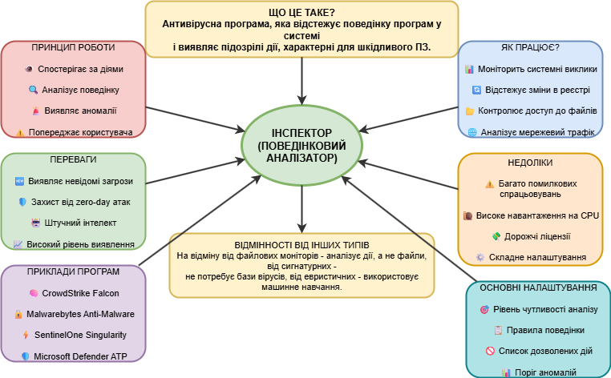
Антивірусна програма, яка відстежує поведінку програм у системі і виявляє підозрілі дії, характерні для шкідливого ПЗ.
3
Поштовий фільтр
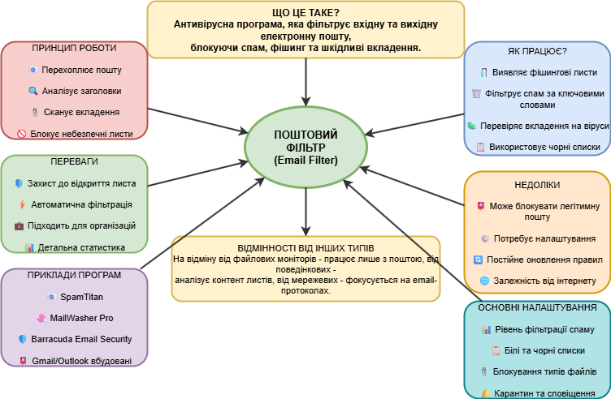
Антивірусна програма, яка фільтрує вхідну та вихідну електронну пошту, блокуючи спам, фішинг та шкідливі вкладення.
4
USB-захист
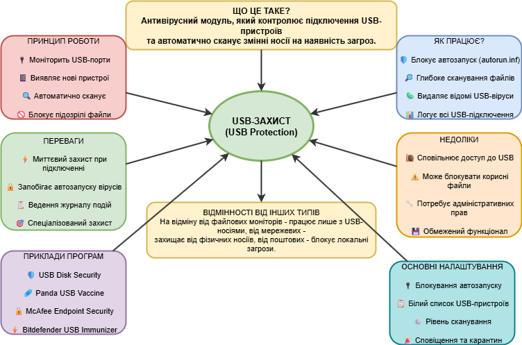
Антивірусний модуль, який контролює підключення USB-пристроїв та автоматично сканує змінні носії на наявність загроз.
5
Евристичний аналізатор
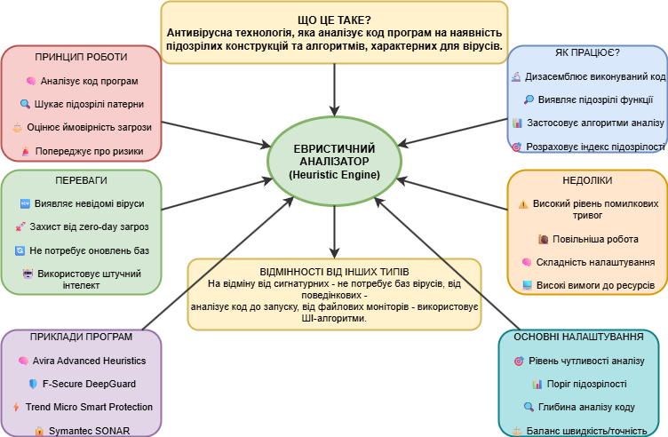
Антивірусна технологія, яка аналізує код програм на наявність підозрілих конструкцій та алгоритмів, характерних для вірусів.
6
Мережевий екран (брандмауер)
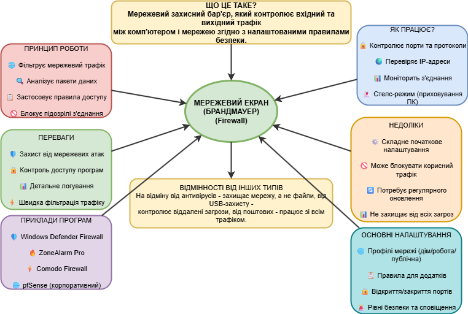
Мережевий захисний бар'єр, який контролює вхідний та вихідний трафік між комп'ютером і мережею згідно з налаштованими правилами безпеки.
7
Антифішинг
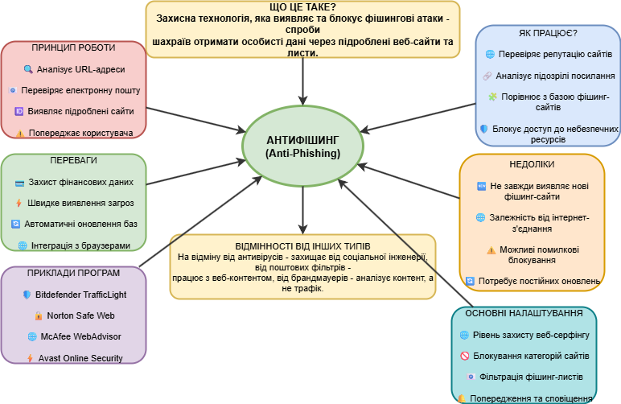
Захисна технологія, яка виявляє та блокує фішингові атаки - спроби шахраїв отримати особисті дані через підроблені веб-сайти та листи.
8
Антиспам
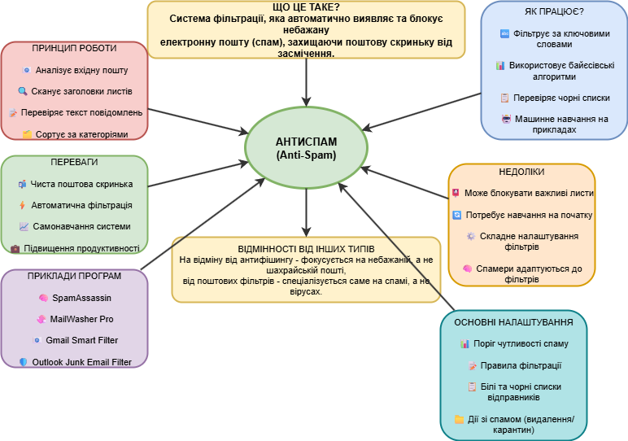
Система фільтрації, яка автоматично виявляє та блокує небажану електронну пошту (спам), захищаючи поштову скриньку від засмічення.
9
Батьківський контроль
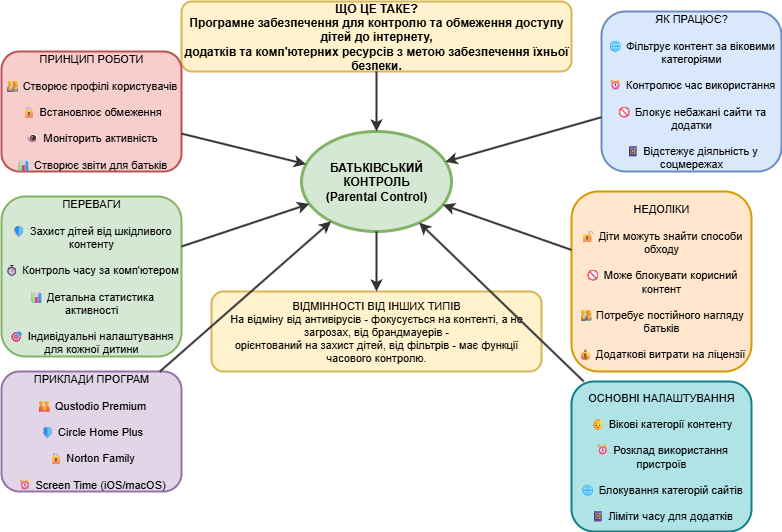
Програмне забезпечення для контролю та обмеження доступу дітей до інтернету, додатків та комп'ютерних ресурсів з метою забезпечення їхньої безпеки.
10
Комплексні рішення безпеки
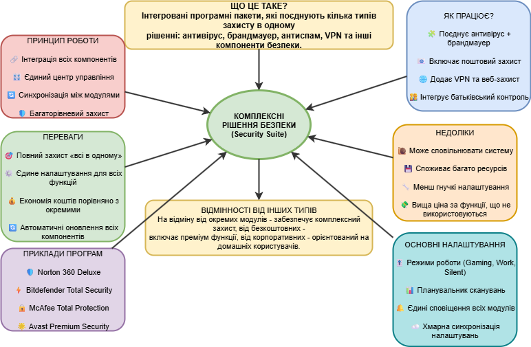
Інтегровані програмні пакети, які поєднують кілька типів захисту в одному рішенні: антивірус, брандмауер, антиспам, VPN та інші компоненти безпеки.
11
Хмарні антивіруси
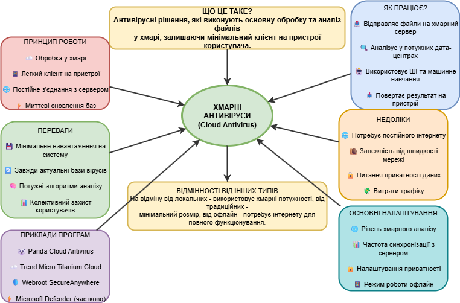
Антивірусні рішення, які виконують основну обробку та аналіз файлів у хмарі, залишаючи мінімальний клієнт на пристрої користувача.
12
Антишпигунське ПЗ
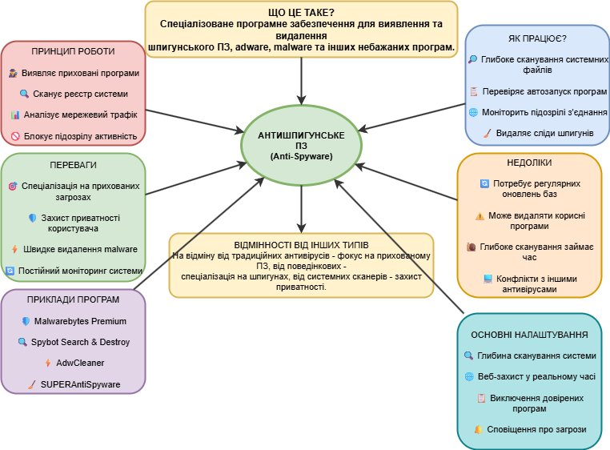
Спеціалізоване програмне забезпечення для виявлення та видалення шпигунського ПЗ, adware, malware та інших небажаних програм.
📊 Порівняльна таблиця антивірусного ПЗ
| Тип антивірусу | Призначення | Спосіб роботи | Переваги | Недоліки | Приклади програм | Унікальні особливості |
|---|---|---|---|---|---|---|
| Файловий монітор | Захист файлової системи | Постійний моніторинг у RAM | Миттєвий захист, низьке навантаження | Лише відомі віруси | Windows Defender, ESET NOD32 | Автоматична перевірка при доступі |
| Поведінковий аналізатор | Аналіз поведінки програм | Моніторинг системних викликів | Виявлення невідомих загроз | Багато помилкових спрацьовувань | CrowdStrike Falcon, Malwarebytes | Захист від zero-day атак |
| Поштовий фільтр | Захист електронної пошти | Аналіз заголовків та вкладень | Захист до відкриття листа | Може блокувати легітимну пошту | SpamTitan, MailWasher Pro | Спеціалізація на email-загрозах |
| USB-захист | Контроль USB-пристроїв | Автоматичне сканування носіїв | Блокування автозапуску | Сповільнює доступ до USB | USB Disk Security, Panda USB Vaccine | Захист від фізичних носіїв |
| Евристичний аналізатор | Аналіз коду програм | Пошук підозрілих патернів | Не потребує оновлень баз | Високий рівень помилкових тривог | Avira Advanced Heuristics, F-Secure DeepGuard | Використання ШІ-алгоритмів |
| Мережевий екран | Контроль мережевого трафіку | Фільтрація пакетів даних | Захист від мережевих атак | Складне налаштування | ZoneAlarm Pro, Comodo Firewall | Стелс-режим та контроль портів |
| Антифішинг | Захист від шахрайства | Перевірка репутації сайтів | Захист фінансових даних | Не завжди виявляє нові сайти | Bitdefender TrafficLight, Norton Safe Web | Захист від соціальної інженерії |
| Антиспам | Фільтрація спаму | Байєсівські алгоритми | Чиста поштова скринька | Потребує навчання | SpamAssassin, Gmail Smart Filter | Самонавчання системи |
| Батьківський контроль | Контроль доступу дітей | Фільтрація за віковими категоріями | Індивідуальні налаштування | Діти можуть знайти обходи | Qustodio Premium, Circle Home Plus | Часовий контроль використання |
| Комплексні рішення | Повний захист "все в одному" | Інтеграція всіх компонентів | Економія коштів, єдине управління | Споживає багато ресурсів | Norton 360, Bitdefender Total Security | Режими роботи (Gaming, Work, Silent) |
| Хмарні антивіруси | Обробка в хмарі | Мінімальний клієнт на пристрої | Завжди актуальні бази, потужний аналіз | Потребує постійного інтернету | Panda Cloud Antivirus, Webroot SecureAnywhere | Використання хмарних потужностей |
| Антишпигунське ПЗ | Видалення шпигунського ПЗ | Глибоке сканування системи | Спеціалізація на прихованих загрозах | Може видаляти корисні програми | Malwarebytes Premium, Spybot Search & Destroy | Захист приватності користувача |
🎯 За методом цілеспрямування
Файл-орієнтовані
- • Файловий монітор
- • USB-захист
- • Антишпигунське ПЗ
Система-орієнтовані
- • Поведінковий аналізатор
- • Евристичний аналізатор
- • Комплексні рішення
Мережа-орієнтовані
- • Мережевий екран
- • Антифішинг
- • Хмарні антивіруси
Комунікація-орієнтовані
- • Поштовий фільтр
- • Антиспам
- • Батьківський контроль
⚡ За швидкістю реакції
Миттєво
- • Файловий монітор
- • Мережевий екран
- • USB-захист
Швидко
- • Поштовий фільтр
- • Антиспам
- • Антифішинг
Повільно
- • Поведінковий аналізатор
- • Евристичний аналізатор
- • Антишпигунське ПЗ
Змінна швидкість
- • Комплексні рішення
- • Хмарні антивіруси
- • Батьківський контроль
🔧 За складністю налаштування
Прості
- • Файловий монітор
- • USB-захист
- • Хмарні антивіруси
Середні
- • Поштовий фільтр
- • Антиспам
- • Антифішинг
Складні
- • Мережевий екран
- • Поведінковий аналізатор
- • Евристичний аналізатор
Дуже складні
- • Комплексні рішення
- • Антишпигунське ПЗ
- • Батьківський контроль
💰 За вартістю
Безкоштовні
- • Файловий монітор (Windows Defender)
- • Мережевий екран (вбудований)
- • Антиспам (Gmail, Outlook)
Бюджетні
- • USB-захист
- • Антифішинг
- • Поштовий фільтр
Середня ціна
- • Поведінковий аналізатор
- • Евристичний аналізатор
- • Антишпигунське ПЗ
Дорогі
- • Комплексні рішення
- • Батьківський контроль (преміум)
- • Хмарні антивіруси (корпоративні)